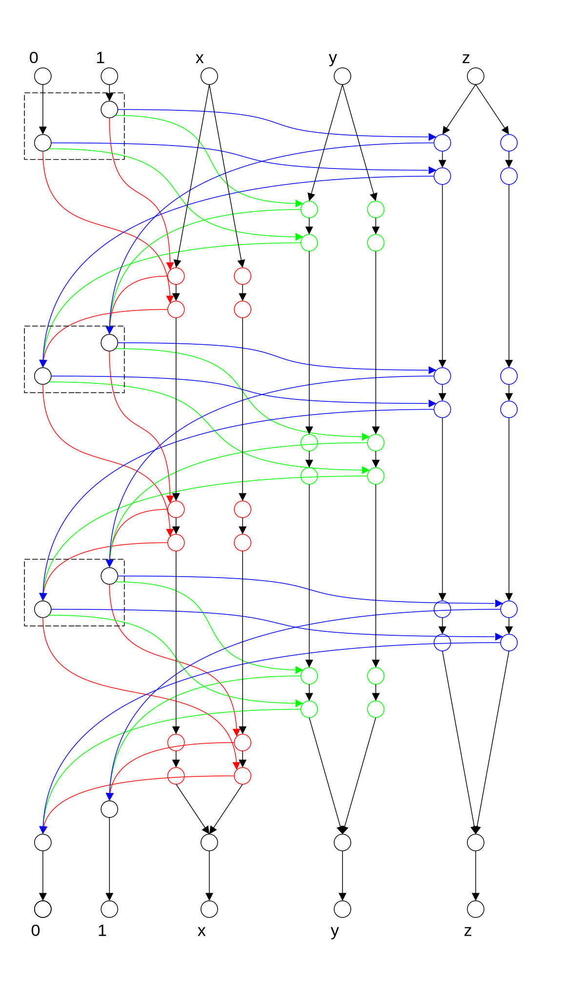

While ruminating on the difficulty of irreducible saw patterns, I took another look at Fortune et al. and noticed the following mention of On the complexity of time table and multi-commodity flow problems by Even et al.:
We note that the result of Even, Itai and Shamir [2] on multicommodity flows implies that the directed subgraph homeomorphism problem is NP-complete if both pattern and input graphs are given as input, even if the input graph is acyclic.
I am outside the paywall and can't afford the luxury of a-glance-for-$33. I am also not as courageous as the Sci-Hub creator and don't want to invite trouble from the DOJ 1. BUT, it's not too hard to recreate 2 the results outside the paywall so let me do this now.
Multi-commodity integral flow on DAGs with variable commodity count
When it comes to NP-completeness proofs, a picture is worth a thousand words:
Illustrated is the encoding of the 3SAT formula . The edges are colored solely to aid visual tracing and a flow is free to travel through any edge. We test if there are five vertex disjoint flows from the sources at the top to their corresponding targets at the bottom. (To reason in terms of edge capacity, just apply the technique in stackoverflow 9833516.)
The extra flow for the stack of clauses (each marked by a dashed box) is needed to avoid shortcuts:
- if flow 1 wants to start traveling down a variable column, flow 0 gets immediately cut off;
- if flow 0 wants to start traveling down a variable column, then at the next (if any) return to one of the variable columns, flow 1 either gets cut off, or visits the other column cutting off the variable flow. Either way, a flow is lost.
The reduction to SAT should be pretty straight-forward and is omitted.
Multi-commodity integral flow on directed graphs with 2 commodities
Let me also unwall the following statement in the abstract of Even et al.:
The multi-commodity integral flow problem is shown to be NP-complete even if the number of commodities is two. This is true both in the directed and undirected case.
The directed case is already addressed in The Direct Subgraph Homeomorphism Problem (1978) by Fortune, Hopcroft and Wyllie.
A stronger verion of the undirected case can be found in On undirected two-commodity integral flow, disjoint paths and strict terminal connection problems (2021) by de Melo, de Figueiredo and Souza.
Conclusion
This post was born out of an idea regarding how to unwall paywalled scholarly content while staying outside the battle between fair use and the billion dollar publishing business. Hope I can find time to make it happen in the next few months.
Btw, I think the word "unwall" is a better choice than "unpaywall" 3 because after the distraction of "pay" is gone, the focus is solely on the "wall" and all its negative externalities.
While I may have just found myself a new project, no conclusion can be drawn regarding the detour problem using the wheel just reinvented: I am by now pretty convinced that no reduction from 3SAT can avoid the "shortcut problem" like this or this (however some of the shortcuts can be fixed).
Ironically, while the cost of paid access is discouraging to some, the legal risk of unpaid access might be more discouraging to others. If Alexandra Elbakyan was an American, she would probably suffer the same fate as Aaron Swartz. Have those with a narrow protectionist view considered the consequences of their narrow protection of publishers' profit?↩︎
Given the direction the world is heading, I won't be surprised if some day this gets outlawed as well.↩︎
which seems like a very useful service! Wish I had found out about it earlier.↩︎